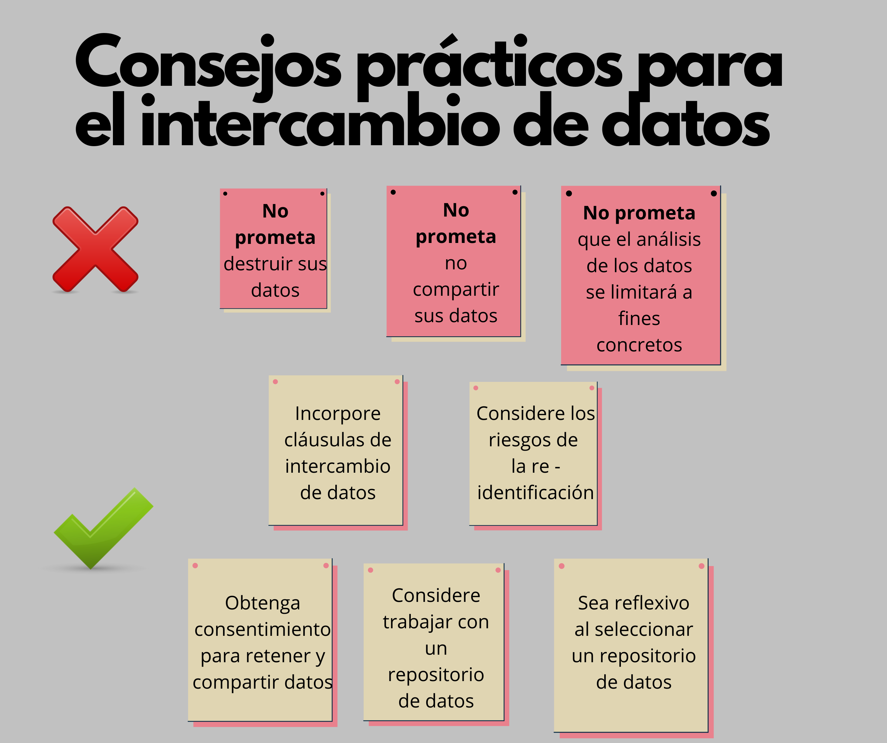

El intercambio de datos dentro del proceso de investigación facilita el reanálisis y/o la replicación de los estudios. Sin embargo, a lo largo de los años, ha primado dentro de las comunidades de ética en investigación, como la Junta de Revisión Institucional (IRB), una cultura de secreto y de destrucción de los datos.
El artículo publicado por Meyer (2018) brinda ciertas recomendaciones (pros y contras) sobre el intercambio de datos para futuras investigaciones que consideren trabajar con seres humanos como participantes. En este sentido, Meyer (2018) presenta una serie de consejos prácticos que permitirán a los investigadores compartir sus datos de forma ética:
1. No prometa destruir datos: Al realizar una investigación evite incluir implícita y/o explícitamente alguna forma de destrucción de datos. A pesar de que son muy “raros” los casos en los que sí se debe seguir este procedimiento, estos deben ser justificados adecuadamente. Por ejemplo, cuando los datos de una investigación representan un posible daño hacia los participantes.
2. No prometa no compartir datos: Cuando los investigadores incluyen esta “promesa” de no compartir los datos que serán recolectados en los formularios de consentimiento, dificultan que más adelante dichos datos puedan compartirse públicamente.
3. No prometa que el análisis de los datos recopilados se limitará solo a fines concretos: Si bien los investigadores principales de un estudio posiblemente no vuelvan a utilizar los datos recopilados en un inicio para distintos fines, otros investigadores con propósitos diferentes pueden querer hacerlo, para ello, los participantes deben dar un consentimiento adicional.
4. Obtenga consentimiento para retener y compartir datos: Es importante informar a los participantes sobre cómo y con quiénes se compartirán sus datos una vez que hayan aceptado el consentimiento. Asimismo, informar sobre los fines para los cuales se utilizarán sus datos.
5. Incorpore cláusulas de retención e intercambio de datos: Este procedimiento ayudaría a que los investigadores desarrollen una cultura centrada en el intercambio de datos. Se debe evitar asumir que los datos recopilados no pueden ser compartidos de forma ética o que los participantes se nieguen a aceptar cláusulas de ese tipo (considerando a sus datos como sensibles).
6. Sea reflexivo al considerar los riesgos de reidentificación: Muchos de los datos recopilados denominados “anónimos” pueden ser reconocidos, si bien no por todo un público general, sí por personas allegadas o familiares de los participantes. Es por ello que, se deben tomar medidas para salvaguardar la identificación de los datos, a menos de que se consideren inocuos o en el caso de que los participantes hayan brindado su consentimiento.
7. Considere trabajar con un repositorio de datos: Los repositorios de datos facilitan que otros investigadores encuentren un conjunto de datos que fueron proporcionados por los propietarios o investigadores originales.
8. Sea reflexivo al seleccionar un repositorio de datos: Existen repositorios que se adaptan al tipo de datos de cada investigación. Desde los repositorios abiertos a toda la comunidad científica hasta aquellos que solo las comparten con investigadores calificados o específicos.

Si bien las recomendaciones señaladas anteriormente se relacionan con un aspecto previo a la recogida de los datos, ¿qué hacer cuando a través del consentimiento informado se ha establecido que los datos de los participantes no se compartirán? Para responder a esa pregunta, se deben tener presente algunas consideraciones éticas y reglamentarias.
Con respecto a la primera, tener en cuenta que el intercambio de datos de una investigación podría significar un riesgo para los participantes. Los datos que están asociados a su identidad pueden ser compartidos con personas a las que no les consintieron tenerlos y de esta manera perderían el derecho básico a su privacidad. En el artículo de Meyer (2018) se plantean algunas condiciones que deben cumplirse (no necesariamente todas) para facilitar un proceso de intercambio de datos que no fueron consentidos previamente:
El formulario de consentimiento no indica información sobre el intercambio de datos ni tampoco incluye la promesa de no compartirlos.
Los datos que han sido recolectados no son especialmente sensibles, es decir, cuando la reidentificación es muy poco probable o no sugiera daños a los participantes.
Los datos serán accesibles solo bajo ciertas condiciones, pero se asegura que estarán protegidos.
El intercambio procederá cuando los fines de la investigación secundaria se encuentren dentro del alcance de los fines de la investigación original.
Con respecto a las consideraciones reglamentarias, si bien los organismos encargados de supervisar la correcta protección de los datos brindados por los participantes no prohíben su intercambio, los investigadores deben consultar antes a una Junta de Revisión Institucional si pueden o no compartirlos. De esta manera, se obtiene una opinión externa sobre las implicancias de compartir un conjunto de datos particulares.
Meyer, M. (2018). Practical tips for ethical data sharing. Advances in Methods and Practices in Psychological Science, 1(1), 131–144. https://doi.org/10.1177/2515245917747656